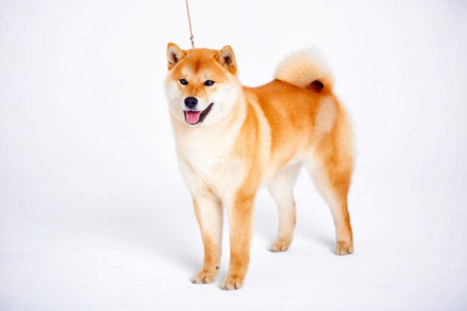

Shiba inu.
Pár szó erről a fajtáról..
A shiba inu japán kutyafajta, a hat eredeti spitz fajta közül a legkisebb.Kistermetű, mozgékony kutya, jól alkalmazkodik a hegyvidéki terephez, ezért eredetileg vadászkutyaként tenyésztették. Hasonlít az akitára de kisebb. Egyike azon kevés ősi kutyafajtáknak, amelyek mind a mai napig fennmaradtak. Nekem is egy hét hónapos shiba kutyusom van, és nagyon okos kiskutya. Az utazást is jól tűrte, illetve ott is nagyon szépen viselkedett. 
|